Snakes of Bolivia
168 living snake species are recorded in Bolivia in SnakeList: 41 venomous and 127 non-venomous, from 7 families.
- 168living species
- 41venomous
- 127non-venomous
- 7families
These totals count the unique living snake species SnakeList records in Bolivia. A species counts if it is recorded anywhere in the country, so not every snake lives in every part of it.
Species
Showing 168 species
 Aesculapian False Coral SnakeErythrolamprus aesculapii
Aesculapian False Coral SnakeErythrolamprus aesculapii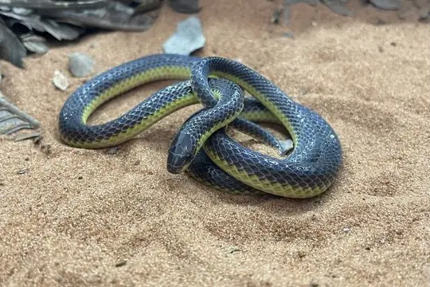
Albuquerque Ground SnakeAtractus albuquerquei Almaden Ground SnakeErythrolamprus almadensis
Almaden Ground SnakeErythrolamprus almadensis Amazon Banded SnakeRhinobothryum lentiginosum
Amazon Banded SnakeRhinobothryum lentiginosum Amazon Basin Tree SnakeImantodes lentiferus
Amazon Basin Tree SnakeImantodes lentiferus Amazon Coastal House SnakeThamnodynastes pallidus
Amazon Coastal House SnakeThamnodynastes pallidus Amazon Coral SnakeMicrurus spixii
Amazon Coral SnakeMicrurus spixii Amazon False Coral SnakeOxyrhopus rhombifer
Amazon False Coral SnakeOxyrhopus rhombifer Amazon False Fer-de-lanceXenodon severus
Amazon False Fer-de-lanceXenodon severus Amazon Puffing SnakeSpilotes sulphureus
Amazon Puffing SnakeSpilotes sulphureus Amazon Tree BoaCorallus hortulana
Amazon Tree BoaCorallus hortulana Andean Blackback Coral SnakeMicrurus narduccii
Andean Blackback Coral SnakeMicrurus narduccii Andean LanceheadBothrocophias andianus
Andean LanceheadBothrocophias andianus Annellated Coral SnakeMicrurus annellatus
Annellated Coral SnakeMicrurus annellatus Aquatic Coral SnakeMicrurus surinamensis
Aquatic Coral SnakeMicrurus surinamensis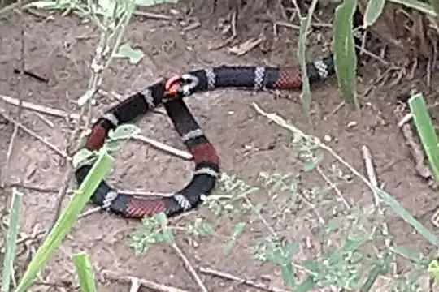
Argentinian Coral SnakeMicrurus pyrrhocryptus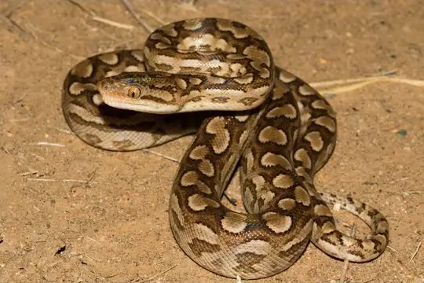
Argentinian Rainbow BoaEpicrates alvarezi- No photo yetArrow Ground SnakeErythrolamprus sagittifer
 Banded Cat-eyed Snake (annulata)Leptodeira annulata
Banded Cat-eyed Snake (annulata)Leptodeira annulata Banded Hognose SnakeXenodon pulcher
Banded Hognose SnakeXenodon pulcher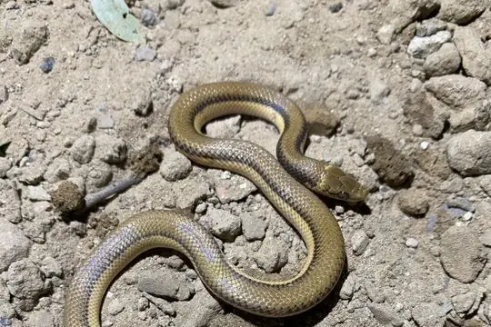
Banded Pampas SnakePhimophis vittatus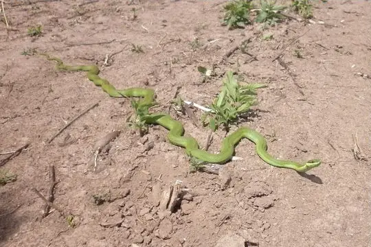
Baron's Green RacerPhilodryas baroni Bates' Tree BoaCorallus batesii
Bates' Tree BoaCorallus batesii- No photo yetBeaked BlackheadApostolepis vittata
 Beautiful Calico SnakeOxyrhopus formosus
Beautiful Calico SnakeOxyrhopus formosus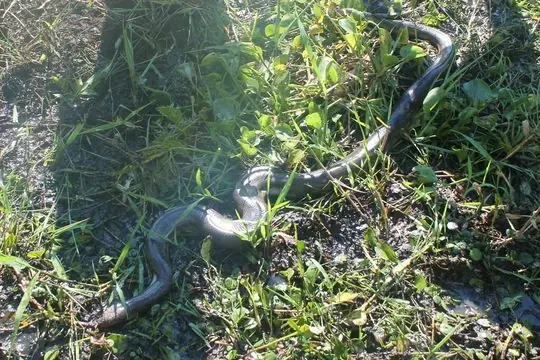
Beni AnacondaEunectes beniensis Black False BoaPseudoboa nigra
Black False BoaPseudoboa nigra Black-collared SnakeDrepanoides anomalus
Black-collared SnakeDrepanoides anomalus Boa ConstrictorBoa constrictor
Boa ConstrictorBoa constrictor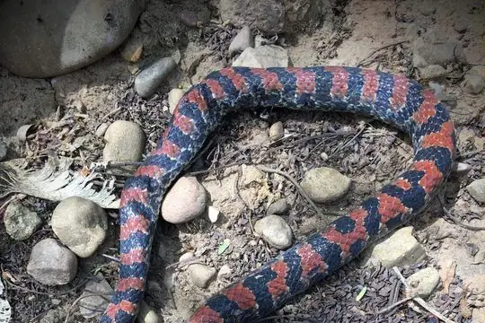
Bock's Ground SnakeAtractus bocki Boddaert's Tropical RacerMastigodryas boddaerti
Boddaert's Tropical RacerMastigodryas boddaerti Boettger's SipoChironius flavolineatus
Boettger's SipoChironius flavolineatus- No photo yetBolivian Burrowing SnakeApostolepis dorbignyi
- No photo yetBolivian Coral Snake (obscurus)Micrurus obscurus
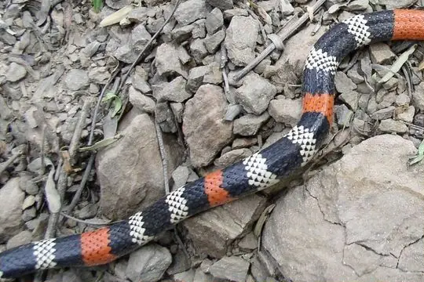
Bolivian Coral Snake (serranus)Micrurus serranus Bolivian LanceheadBothrops sanctaecrucis
Bolivian LanceheadBothrops sanctaecrucis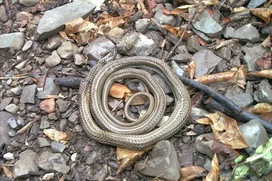
Bolivian RacerPhilodryas boliviana Bolivian Tree SnakeDipsas turgida
Bolivian Tree SnakeDipsas turgida- No photo yetBorrelli's Burrowing SnakeApostolepis borellii
 Brazilian False Coral SnakeOxyrhopus trigeminus
Brazilian False Coral SnakeOxyrhopus trigeminus Brazilian Green RacerPhilodryas aestiva
Brazilian Green RacerPhilodryas aestiva Brazilian LanceheadBothrops moojeni
Brazilian LanceheadBothrops moojeni Brazilian Snail EaterDipsas mikanii
Brazilian Snail EaterDipsas mikanii Broadhead Ground SnakeAtractus latifrons
Broadhead Ground SnakeAtractus latifrons Brongersma's Worm SnakeAmerotyphlops brongersmianus
Brongersma's Worm SnakeAmerotyphlops brongersmianus Brown SipoChironius fuscus
Brown SipoChironius fuscus Brown VinesnakeOxybelis aeneus
Brown VinesnakeOxybelis aeneus BushmasterLachesis muta
BushmasterLachesis muta Cascabel RattlesnakeCrotalus durissus
Cascabel RattlesnakeCrotalus durissus Catesby's Snail-eaterDipsas catesbyi
Catesby's Snail-eaterDipsas catesbyi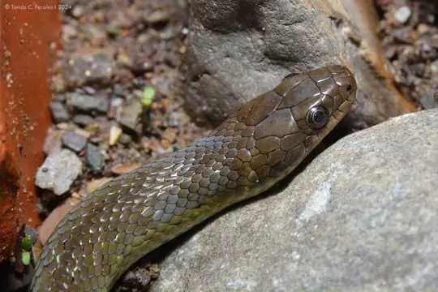
Cei's Ground SnakeErythrolamprus ceii Central Sipo (maculoventris)Chironius maculoventris
Central Sipo (maculoventris)Chironius maculoventris Central Sipo (quadricarinatus)Chironius quadricarinatus
Central Sipo (quadricarinatus)Chironius quadricarinatus Cerrado Lancehead (pauloensis)Bothrops pauloensis
Cerrado Lancehead (pauloensis)Bothrops pauloensis- No photo yetChacoan BlackheadApostolepis breviceps
 Chapare Snail-eaterDipsas chaparensis
Chapare Snail-eaterDipsas chaparensis- No photo yetChristine's BlackheadApostolepis christineae
- No photo yetCoastal House Snake (strigatus)Thamnodynastes strigatus
 Common Green RacerChlorosoma viridissimum
Common Green RacerChlorosoma viridissimum Coral Cylinder SnakesAnilius scytale
Coral Cylinder SnakesAnilius scytale Crowned False BoaPseudoboa coronata
Crowned False BoaPseudoboa coronata Desert Coral SnakeMicrurus tschudii
Desert Coral SnakeMicrurus tschudii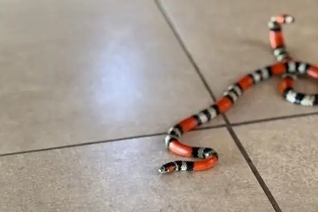
Diana's Coral SnakeMicrurus diana Diurnal Vine SnakeXenoxybelis argenteus
Diurnal Vine SnakeXenoxybelis argenteus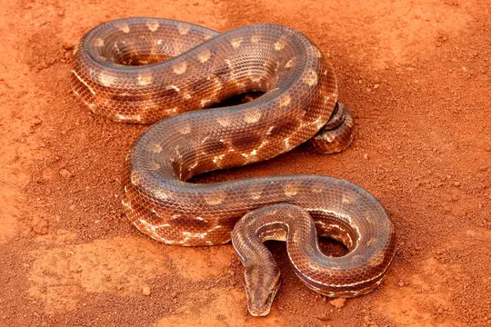
Eastern Rainbow BoaEpicrates crassus Ecuador SipoChironius grandisquamis
Ecuador SipoChironius grandisquamis- No photo yetEleven-striped Blind SnakeEpictia undecimstriata
 Emmel's Ground SnakeAtractus emmeli
Emmel's Ground SnakeAtractus emmeli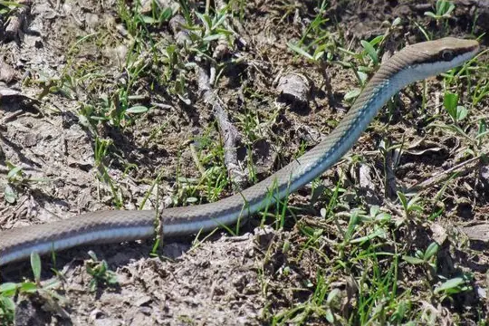
Erland's Miranda Green RacerPhilodryas erlandi Fer-de-LanceBothrops atrox
Fer-de-LanceBothrops atrox Fiddle-string SnakeImantodes cenchoa
Fiddle-string SnakeImantodes cenchoa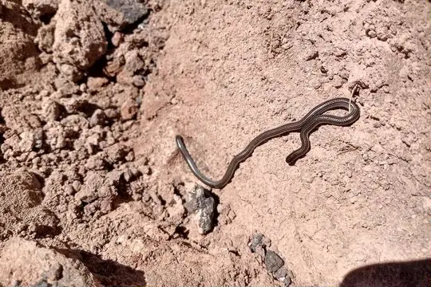
Freiberg's Blind SnakeEpictia australis Fronted Ground SnakeLygophis flavifrenatus
Fronted Ground SnakeLygophis flavifrenatus Green AnacondaEunectes murinus
Green AnacondaEunectes murinus Green JararacaBothrops bilineatus
Green JararacaBothrops bilineatus Guibe's Flame SnakeOxyrhopus guibei
Guibe's Flame SnakeOxyrhopus guibei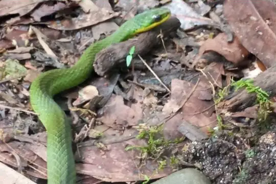
Günther's Green LiophisErythrolamprus albertguentheri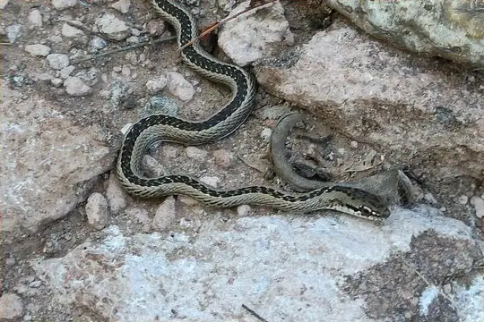
Günther's Green RacerPhilodryas psammophidea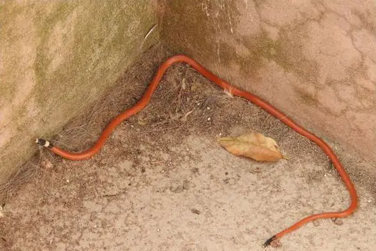
Harvey’s BlackheadApostolepis multicincta Hognose LanceheadBothrocophias hyoprora
Hognose LanceheadBothrocophias hyoprora Inca Forest Pit Viper (oligolepis)Bothrops oligolepis
Inca Forest Pit Viper (oligolepis)Bothrops oligolepis Indigo SnakeDrymarchon corais
Indigo SnakeDrymarchon corais Inkaterra Vine SnakeOxybelis inkaterra
Inkaterra Vine SnakeOxybelis inkaterra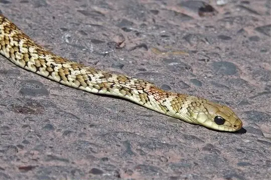
Jan's Green RacerPhilodryas varia Jararaca PintadaBothrops neuwiedi
Jararaca PintadaBothrops neuwiedi Jonathan's LanceheadBothrops jonathani
Jonathan's LanceheadBothrops jonathani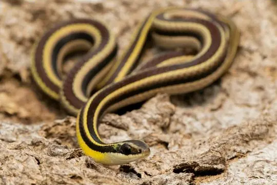
Lema's Ground SnakeLygophis dilepis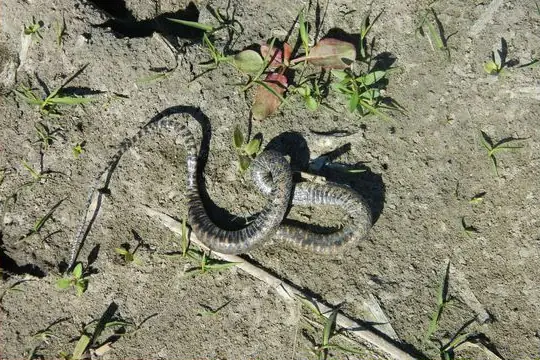
Leopard KeelbackHelicops leopardinus Lichtenstein's Green RacerPhilodryas olfersii
Lichtenstein's Green RacerPhilodryas olfersii Lined Ground SnakeLygophis lineatus
Lined Ground SnakeLygophis lineatus Linnaeus' SipoChironius exoletus
Linnaeus' SipoChironius exoletus Mangrove SnakErythrolamprus cobella
Mangrove SnakErythrolamprus cobella Mato Grosso LanceheadBothrops mattogrossensis
Mato Grosso LanceheadBothrops mattogrossensis Military Ground SnakeErythrolamprus miliaris
Military Ground SnakeErythrolamprus miliaris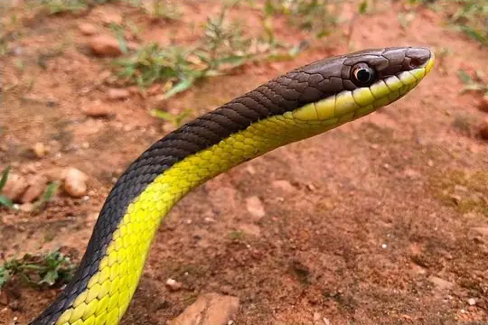
Miranda Green Racer (mattogrossensis)Philodryas mattogrossensis Mountain KeelbackHelicops angulatus
Mountain KeelbackHelicops angulatus Mountain SipoChironius monticola
Mountain SipoChironius monticola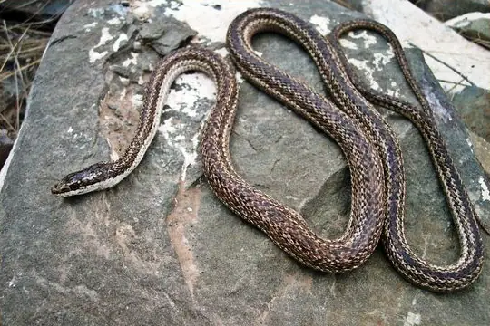
Mousehole SnakePhilodryas trilineata Mussurana (maculata)Boiruna maculata
Mussurana (maculata)Boiruna maculata Neckband Ground SnakeAtractus torquatus
Neckband Ground SnakeAtractus torquatus Neotropical Snail-eater (bucephala)Dipsas bucephala
Neotropical Snail-eater (bucephala)Dipsas bucephala Neotropical Snail-eater (cisticeps)Dipsas cisticeps
Neotropical Snail-eater (cisticeps)Dipsas cisticeps Neotropical Snail-eater (indica)Dipsas indica
Neotropical Snail-eater (indica)Dipsas indica Norman's KeelbackHelicops polylepis
Norman's KeelbackHelicops polylepis- No photo yetNortheastern Puffing SnakePhrynonax polylepis
 Northern Snail-eaterDipsas pavonina
Northern Snail-eaterDipsas pavonina Northern Woodland RacerDrymoluber dichrous
Northern Woodland RacerDrymoluber dichrous Pachacamac Ground SnakeAtractus snethlageae
Pachacamac Ground SnakeAtractus snethlageae Painted LanceheadBothrops diporus
Painted LanceheadBothrops diporus Panama Spotted Night SnakeSiphlophis cervinus
Panama Spotted Night SnakeSiphlophis cervinus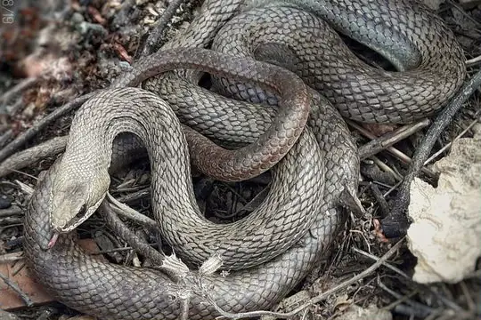
Paraguay Green RacerPhilodryas nattereri Parrot SnakeLeptophis ahaetulla
Parrot SnakeLeptophis ahaetulla Patagonia Green RacerPhilodryas patagoniensis
Patagonia Green RacerPhilodryas patagoniensis Peru Burrowing SnakeApostolepis nigroterminata
Peru Burrowing SnakeApostolepis nigroterminata Peru Slender SnakeTachymenis peruviana
Peru Slender SnakeTachymenis peruviana Rainbow BoaEpicrates cenchria
Rainbow BoaEpicrates cenchria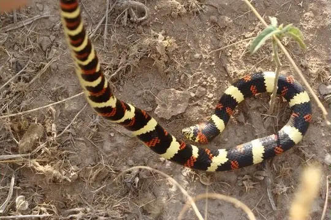
Ringed Hognose SnakeXenodon semicinctus Rio Tropical RacerPalusophis bifossatus
Rio Tropical RacerPalusophis bifossatus Royal Ground SnakeErythrolamprus reginae
Royal Ground SnakeErythrolamprus reginae- No photo yetRuthven's Burrowing SnakeApostolepis tenuis
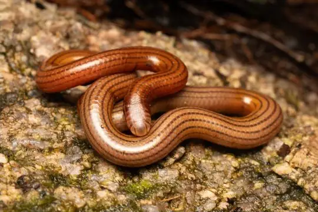
Seven-striped Blind SnakeSiagonodon septemstriatus Sipo (carinatus)Chironius carinatus
Sipo (carinatus)Chironius carinatus Small-eyed ToadheadBothrocophias microphthalmus
Small-eyed ToadheadBothrocophias microphthalmus South American Coral SnakeMicrurus lemniscatus
South American Coral SnakeMicrurus lemniscatus South American Pond Snake (plicatilis)Pseudoeryx plicatilis
South American Pond Snake (plicatilis)Pseudoeryx plicatilis South American Sipo (multiventris)Chironius multiventris
South American Sipo (multiventris)Chironius multiventris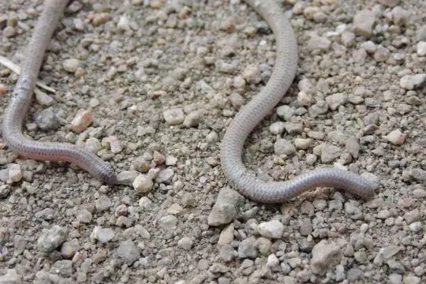
Southern Blind Snake (unguirostris)Rena unguirostris Southern Sharpnose SnakeXenoxybelis boulengeri
Southern Sharpnose SnakeXenoxybelis boulengeri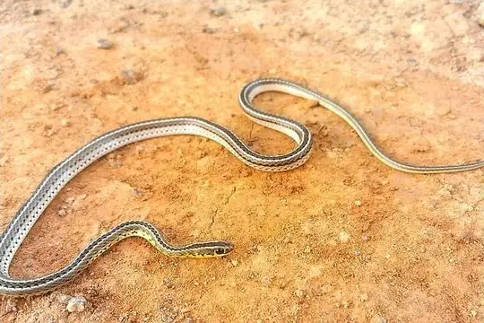
Southern Striped SnakeLygophis meridionalis Speckled Forest Pit ViperBothrops taeniatus
Speckled Forest Pit ViperBothrops taeniatus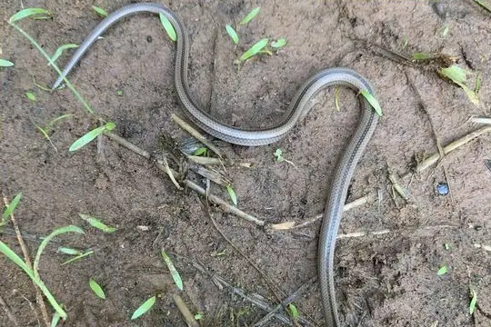
Spirit Ground SnakePsomophis genimaculatus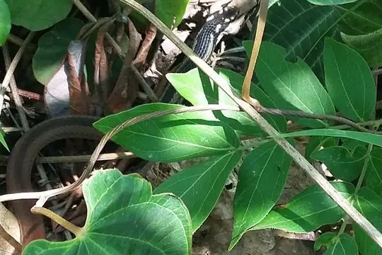
Steinbach's SnakeBaliodryas steinbachi Thin Ground SnakeErythrolamprus taeniurus
Thin Ground SnakeErythrolamprus taeniurus Triangle Water SnakeHydrops triangularis
Triangle Water SnakeHydrops triangularis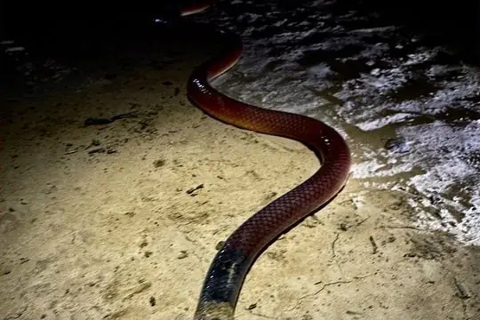
Tricolored Burrowing SnakePhalotris tricolor Tropical Flat SnakeSiphlophis compressus
Tropical Flat SnakeSiphlophis compressus Tschudi's False Coral SnakeOxyrhopus melanogenys
Tschudi's False Coral SnakeOxyrhopus melanogenys Tucuman ThreadsnakeEpictia albipuncta
Tucuman ThreadsnakeEpictia albipuncta Two-colored MussuranaMussurana bicolor
Two-colored MussuranaMussurana bicolor Variegated Snail-eaterDipsas variegata
Variegated Snail-eaterDipsas variegata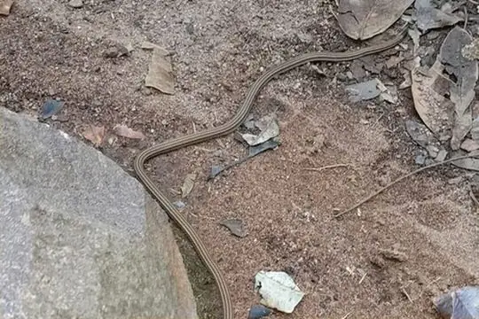
Velasco BlackheadApostolepis phillipsae Velvet SwampsnakeErythrolamprus typhlus
Velvet SwampsnakeErythrolamprus typhlus Wagler's SipoChironius scurrulus
Wagler's SipoChironius scurrulus- No photo yetWagler's SnakeXenodon merremii
- No photo yetWalker's Slender SnakeTachymenis attenuata
 Worontzow's Spotted Night SnakeSiphlophis worontzowi
Worontzow's Spotted Night SnakeSiphlophis worontzowi Wucherer's Ground SnakeXenopholis scalaris
Wucherer's Ground SnakeXenopholis scalaris Yellow AnacondaEunectes notaeus
Yellow AnacondaEunectes notaeus Yellow-bellied SnakeErythrolamprus poecilogyrus
Yellow-bellied SnakeErythrolamprus poecilogyrus- No photo yetApostolepis underwoodi
 Bothrops monsignifer
Bothrops monsignifer- No photo yetBothrops sonene
 Chironius laurenti
Chironius laurenti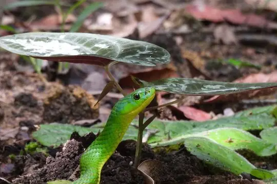
Chlorosoma laticeps- No photo yetClelia langeri
- No photo yetColuber alternans
 Epictia striatula
Epictia striatula Erythrolamprus andinus
Erythrolamprus andinus Erythrolamprus dorsocorallinus
Erythrolamprus dorsocorallinus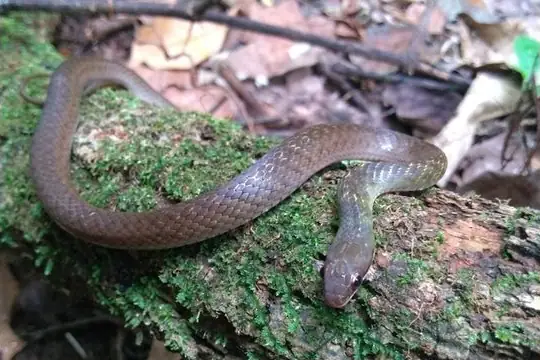
Erythrolamprus macrosomus Erythrolamprus taeniogaster
Erythrolamprus taeniogaster Oxyrhopus emberti
Oxyrhopus emberti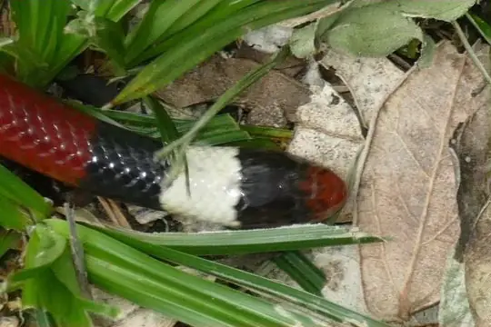
Phalotris sansebastiani- No photo yetTaeniophallus occipitalis
- No photo yetThamnodynastes chaquensis
- No photo yetThamnodynastes lanei
- No photo yetTomodon orestes
 Xenopholis werdingorum
Xenopholis werdingorum
No snakes in Bolivia match.
Bolivia’s snakes in numbers
- Families: Colubridae 123, Viperidae 18, Elapidae 10, Boidae 9, Leptotyphlopidae 6, Aniliidae 1, Typhlopidae 1.
- 13 are recorded in no other country or territory in SnakeList: Beni Anaconda, Bolivian Coral Snake (serranus), Bolivian Lancehead, Bolivian Racer, Chacoan Blackhead, Chapare Snail-eater, Eleven-striped Blind Snake, Walker's Slender Snake, Apostolepis underwoodi, Chironius laurenti, Clelia langeri, Oxyrhopus emberti and 1 more.
How precisely they are recorded
Of the 168 living species recorded in Bolivia, 89 are recorded by department in SnakeList’s data; 79 are recorded only for Bolivia as a whole, so the department pages list them as possible rather than recorded. SnakeList records each species by department, not by exact spot, so a species listed for a department may live in only part of it.
Departments
The departments where SnakeList records snakes, with how many living species are recorded in each. Each page has its species, venomous snakes, families, the species found only there, its cities and neighbours.
- Beni 47 species
- Chuquisaca 11 species
- Cochabamba 18 species
- La Paz 33 species
- Oruro 1 species
- Pando 14 species
- Potosí 4 species
- Santa Cruz 54 species
- Tarija 8 species
No place matches that.
Cities
Its biggest cities, biggest first. SnakeList records snakes by department, not by city, so each city page shows the species recorded in its department and, separately, those only possible there - not species confirmed in the city.
- Santa Cruz de la Sierra Santa Cruz
- Cochabamba Cochabamba Department
- La Paz La Paz Department
- Sucre Chuquisaca
- Oruro Oruro Department
No place matches that.